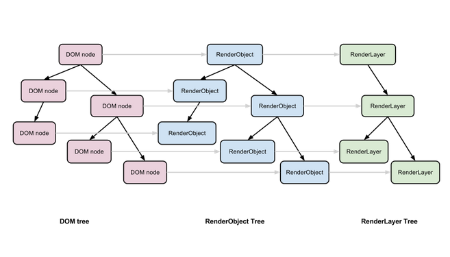
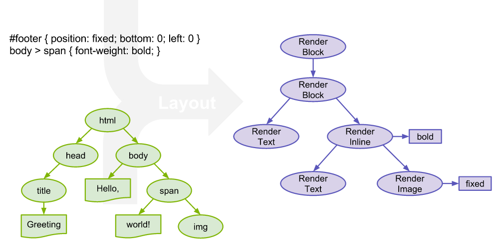
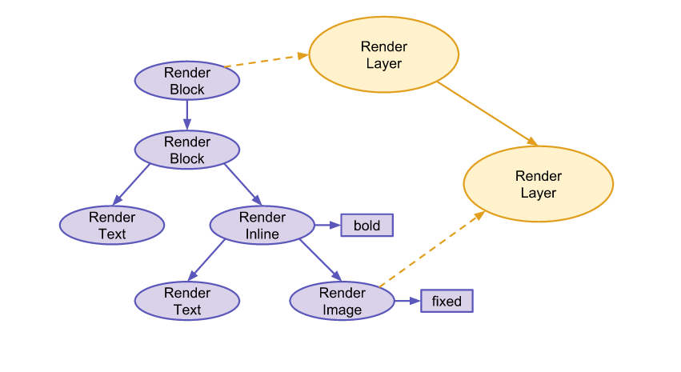
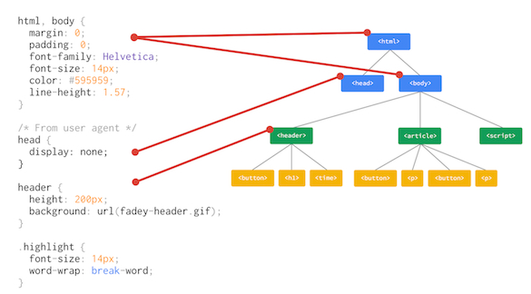
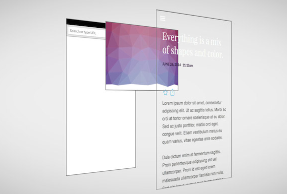
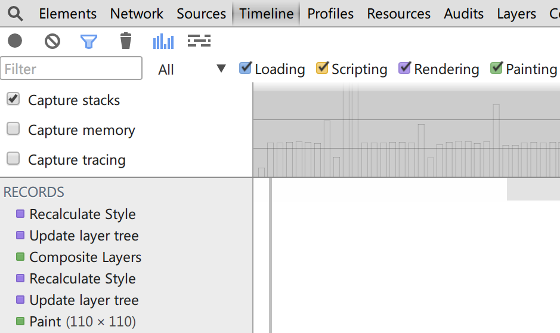
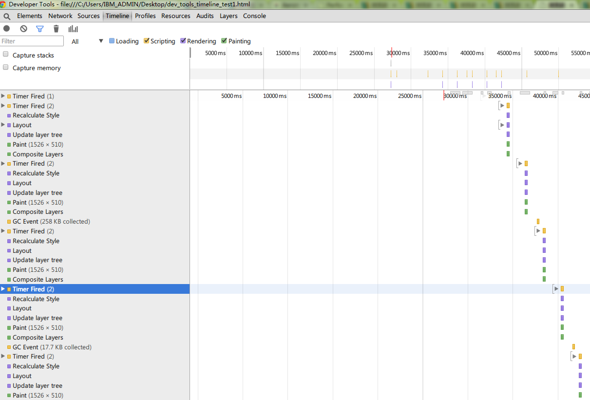

浏览器的渲染过程
渲染引擎
浏览器的渲染是通过其渲染引擎实现的
什么是渲染引擎 ？
渲染引擎是一种对HTML文档进行解析并将其显示在页面上的工具，在浏览器中担任重要任务。
浏览器不同,渲染引擎不同
- Chrome、Safari、Opera浏览器中使用WebKit引擎
- Firefox浏览器中使用Gecko引擎
- IE浏览器中使用Trident引擎
浏览器渲染主流程

- 渲染引擎解析HTML文档，构建DOM树。
- 根据DOM树与CSS样式信息构建渲染树。
- 布局过程，根据渲染树中的位置信息在屏幕中布局元素。
- 绘制过程，将渲染树中的可视化信息绘制在屏幕中。
渐进式的渲染过程
整个渲染是一个渐进的过程。为达到更好的用户体验，渲染引擎会力求尽快将内容显示在屏幕上。它不必等到整个 HTML 文档解析完毕之后，就会开始构建呈现树和设置布局。在不断接收和处理来自网络的其余内容的同时，呈现引擎会将部分内容解析并显示出来。
这也就是我们为什么将CSS文件在html头中引入的原因。
layout和paint的区别
Layout -- 当窗口尺寸被修改（resize)，发生滚动操作，或position、display、width、height等与元素位置相关的样式属性值被更新时触发布局过程。在布局过程中由于要计算所有元素的位置信息，更加会降低页面加载性能。在WebKit引擎中把布局过程称为Layout过程，在Gecko引擎中把绘制过程称为Reflow过程。
Paint -- 当color、background-color、visiblity、outline等与视觉相关的样式属性值被更新时触发绘制过程。在绘制过程中由于要重计算元素的视觉信息，所以会降低页面加载性能。在WebKit引擎中把绘制过程称为Painting过程，在Gecko引擎中把绘制过程称为Repaint过程。
触发layout和paint的原因
- 元素的追加、修改与删除
- 动画
- 样式修改
- 元素的class属性值修改
- hover伪类选择器所触发的元素状态改变
- 由用户在input元素中的输入而引起的文字节点改变
- 使用offsetWidth、offsetHeight或getComputedStyle取得样式属性值
- 文字字体的改变
- 窗口尺寸的改变(resize)
- 元素透明度的改变
- 页面或元素内的滚动
如何减少layout和paint
JavaScript
- 通过DocumentFragment减少DOM操作时引起的布局次数
- 通过复制减少DOM操作时引起的布局次数
- 使用class汇总多个样式修改
- 设置动画帧率在60FPS以内
css
- 使用position:fixed固定布局对性能产生负面影响
- 对执行动画的元素使用position:absolute可以缩小布局范围
- overflow:scroll所引起的滚动将对页面性能产生较大影响
- 使用布局过程或绘制过程消耗较多资源成本的样式属性
@font-face, animation, transition,
box-shadow, border-radius, gradient,
opacity, background-size, text-align
如何监测layout和paint
使用chrome dev tools的timeline panel监测layout和paint，从而有针对性的优化页面
在使用dev tools之前,先了解一下webkit渲染细节
webkit渲染细节
Dom Tree -> Render Object Tree -> Render Layer Tree
Dom Tree -> Render Object Tree
当一个可见的 DOM 节点被添加到 DOM 树上时，内核就会为它生成对应的 RenderOject 添加到 Render 树上。
Render Object -> Render Layer Tree
渲染引擎会为一些特定的 RenderObject 生成对应的 RenderLayer，而这些特定的 RenderObject 跟对应的 RenderLayer 就是直属的关系，相应的，它们的子节点如果没有对应的 RenderLayer，就从属于父节点的 RenderLayer.
Webkit渲染总结
浏览器渲染引擎遍历 Layer 树，访问每一个 RenderLayer，再遍历从属于这个 RenderLayer 的 RenderObject，将每一个 RenderObject 绘制出来。可以认为，Layer 树决定了网页绘制的层次顺序，而从属于 RenderLayer 的 RenderObject 决定了这个 Layer 的内容，所有的 RenderLayer 和 RenderObject 一起就决定了网页在屏幕上最终呈现出来的内容。
使用dev tools之前的一些术语
- Recalculate Style
- Layout(前面已经提过)
- Paint(前面已经提过)
- Composite
Recalculate Style
Composite
使用dev tools
Example1
Example1.html 谢谢观赏
2014-8-21